cucino.net
Rablù condivide le sue ricette su cucino.net.
Registrati
per pubblicare le tue. È gratis!
Rablù
Nidi di uova, cicoria e bufala
05 Giu 2011
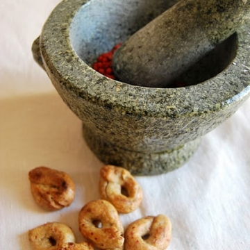
Tarallini al pepe rosa
05 Giu 2011
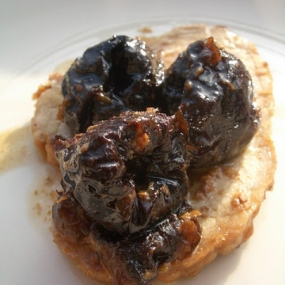
Arista alle prugne
05 Giu 2011
Scacciata catanese
05 Giu 2011
Canestrini con ciliegie e cremina...
05 Giu 2011
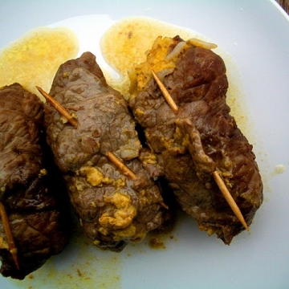
Involtini di manzo e basmati alla...
05 Giu 2011
Biscotti al formaggio
21 Apr 2011
Lenticchie verdi di puy in...
21 Apr 2011
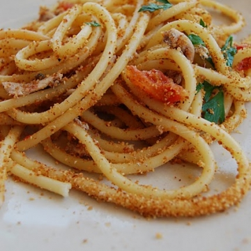
Bucatini con alici fresche (...
21 Apr 2011
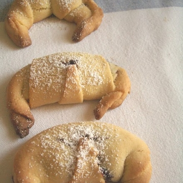
Cornettini alla marmellata con...
21 Apr 2011
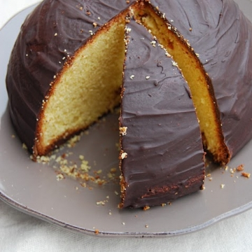
Parrozzo
21 Apr 2011
Paste da latte
21 Apr 2011
Triglie al cartoccio con semi di...
21 Apr 2011
Torta rustica con lonza a dadini...
21 Apr 2011
Faraona all'arancia e miele...
21 Apr 2011
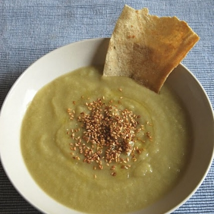
Crema di cavolo broccolo...
21 Apr 2011
Bombette al salame e formaggio...
21 Apr 2011
Biscotti al sesamo di Palermo
21 Apr 2011
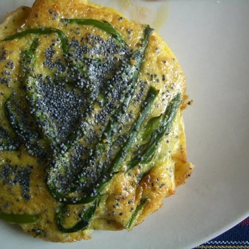
Frittata di asparagi e semi di...
21 Apr 2011
Crostata a pois con cioccolato e...
21 Apr 2011
Involtini di fagiolini e pancetta
15 Apr 2011
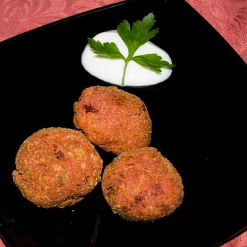
Polpette di ceci e rape rosse
15 Apr 2011
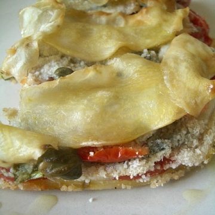
Tortino di alici
15 Apr 2011
Berliner Curry-wurst
15 Apr 2011
Flammkuchen
15 Apr 2011
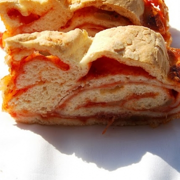
Pizza arrotolata
15 Apr 2011
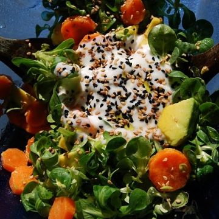
Insalata di valeriana e avocado
15 Apr 2011
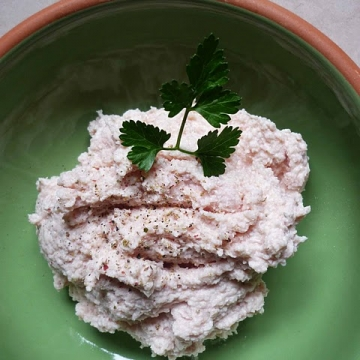
Crema di mortadella
15 Apr 2011
Piccoli calzoni di ricotta,...
14 Apr 2011
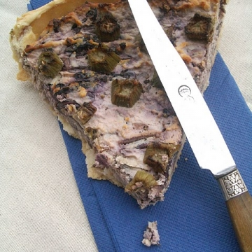
Torta salata con ricotta di...
14 Apr 2011
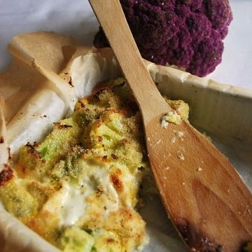
Pasticcio di cavolfiore viola e...
14 Apr 2011
Clafoutis di fragole e menta
14 Apr 2011